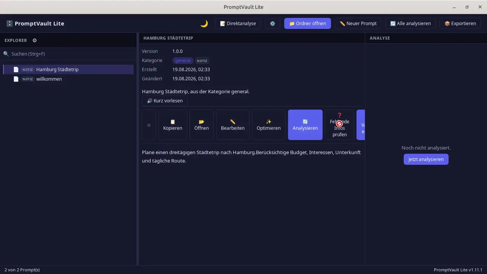
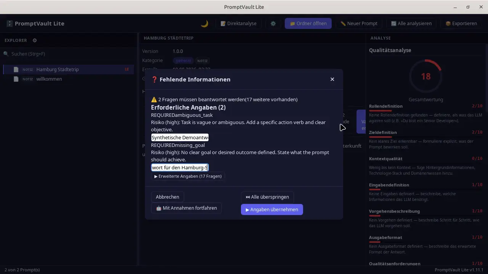
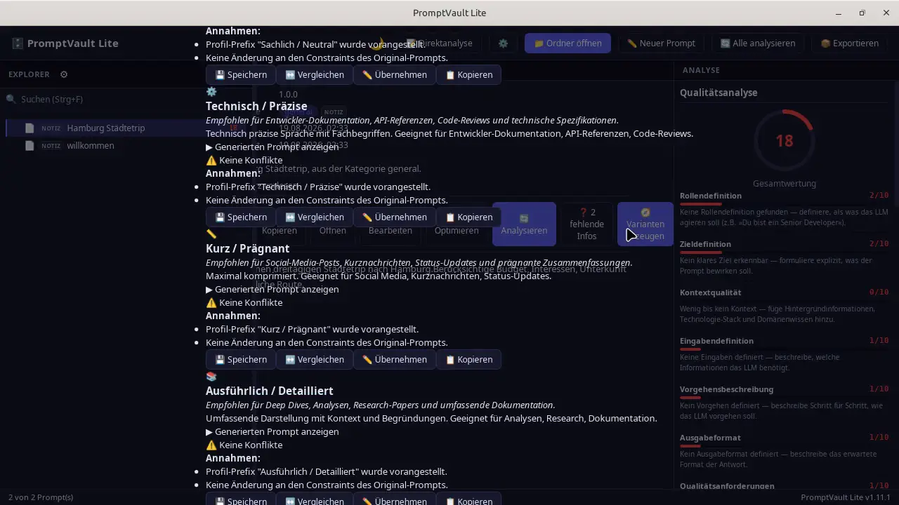

PROMPT-AUTHORING
Erstellen, bearbeiten und speichern Sie Prompts direkt in PromptVault — mit dauerhafter lokaler Persistenz.
Eine lokale Desktop-Anwendung zum Erstellen, Organisieren, Analysieren und Optimieren von Prompt-Sammlungen — Windows.

Erstellen, bearbeiten und speichern Sie Prompts direkt in PromptVault — mit dauerhafter lokaler Persistenz.
Untersuchen Sie Struktur und Qualität eines Prompts anhand klarer Kriterien.
Verbessern Sie Prompts und übernehmen Sie das Ergebnis direkt in den Editor.

Erkennen Sie fehlenden Kontext und schließen Sie Informationslücken im geführten Workflow.

Entwickeln Sie Prompts in verschiedene Richtungen und vergleichen Sie Alternativen.
Kern-Workflows laufen lokal; Diagnose-Exporte enthalten keine Prompt-Inhalte.
Schreiben oder importieren Sie einen Prompt und speichern Sie ihn lokal ab.
Lassen Sie Struktur und Qualität des Prompts anhand klarer Kriterien prüfen.
Verbessern Sie den Prompt oder entwickeln Sie Varianten in verschiedene Richtungen.
Übernehmen Sie das Ergebnis und nutzen Sie Ihre Prompt-Sammlung jederzeit wieder.
Wir machen keine absoluten Sicherheitsversprechen wie „100% sicher“ oder „unhackbar“.
Aktuelle Version herunterladen
Der Installer ist derzeit nicht digital signiert — Windows SmartScreen kann daher eine Warnung anzeigen.
uv tool install promptvault-lite-manager
promptvault install
promptvault launchVoraussetzung: uv (Python-Paketmanager) und Windows.
Lizenz: MIT License